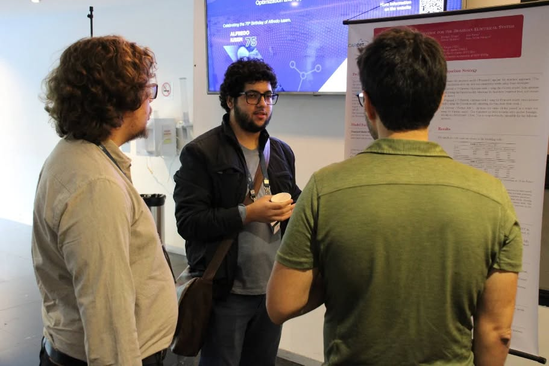

Pesquisa Acadêmica e Desenvolvimento
Foco de Pesquisa e Interesses Acadêmicos
Minha pesquisa de Mestrado em Engenharia da Computação (PESC/COPPE/UFRJ) está centrada em Inteligência Artificial, com ênfase em Modelos Generativos Difusivos (DDPMs). Meu objetivo é explorar o potencial dessas técnicas avançadas, juntamente com outras áreas do Aprendizado de Máquina, Otimização Matemática e Ciência de Dados, para contribuir com o avanço científico e o desenvolvimento de soluções inovadoras.
Meus interesses acadêmicos de aplicação incluem, mas não se limitam a:
- Inteligência Artificial: Investigação e desenvolvimento de modelos de aprendizado profundo, especialmente modelos difusivos, para tarefas como super-resolução, processamento de imagem e modelagem de fenômenos complexos.
- Otimização e Pesquisa Operacional: Aplicação em problemas do setor elétrico (despacho hidrotérmico, planejamento energético) e em finanças quantitativas.
- Dinâmica dos Fluidos Computacional (CFD): Uso de aprendizado de máquina para criar modelos de ordem reduzida e técnicas de super-resolução para simulações.
- Computação Científica: Desenvolvimento e aplicação de métodos computacionais para resolver problemas em diversas áreas da matemática aplicada.
Publicações e Trabalhos Técnicos
Principais contribuições acadêmicas e técnicas:
-
"Data-driven diffusion-based super-resolution applied to Rayleigh-Bénard convection." (Apresentado em conferência, CILAMCE 2024 - trabalho derivado da pesquisa no NACAD/UFRJ)
Co-autores: R. Velho, G. Barros, A. Cortes, F. Rochinha, A. Coutinho, Ruan Felipe da Silva e Sousa, et al. -
"Boundary Conditions for Hydrothermal Operation Planning Problems: The Infinite Horizon Approach." (Apresentado em conferência, CNMAC 2024 - trabalho derivado da Iniciação Científica no IM/UFRJ)
Co-autores: B. F. P. da Costa, A. Calixto, R. T. Figueiredo, D. D. Penna, Ruan Felipe da Silva e Sousa, et al. -
"Otimização Estocástica em Horizonte Periódico." (Trabalho técnico/Relatório, 2022)
Co-autores: B. F. P. da Costa, A. Calixto, R. T. Figueiredo, D. D. Penna, Ruan Felipe da Silva e Sousa, et al.
Perfil no ResearchGate: Ruan F S Sousa (confirme o link).
Perfil no LinkedIn (para uma visão completa, incluindo experiência profissional): Perfil LinkedIn
Participação em Eventos Acadêmicos
- XLV Congresso Ibero-Latino Americano de Métodos Computacionais em Engenharia (CILAMCE 2024).
- Congresso Nacional de Matemática Aplicada e Computacional (CNMAC 2024).
- 1º Workshop Matemática na Indústria (Fundação Getulio Vargas - FGV, Janeiro de 2024) - Foco em Planejamento Energético Diário.
- 9° Workshop de Soluções Matemáticas para Problemas Industriais (CeMEAI-USP, Fevereiro de 2023) - Foco em Planejamento Energético e Restrições Ambientais.
Projetos de Pesquisa Acadêmica
-
Pesquisa de Mestrado em Modelos Generativos Difusivos (Atual)
Aluno Bolsista no NACAD/UFRJ e Mestrando no PESC/COPPE/UFRJ
Foco no desenvolvimento e construção de modelos difusivos de super-resolução para aprimorar resultados de modelos de ordem reduzida em dinâmica dos fluidos. Envolve refatoração de código Python, experimentação e preparação para futuras publicações científicas. -
Pesquisa e Desenvolvimento em Sistemas de Tábuas Biométricas (Fevereiro 2023 - Fevereiro 2024)
Aluno de Iniciação Científica no LabMA/UFRJ (Orientador: Prof. Milton Ramirez)
Atuação na pesquisa e manutenção dos sistemas de cálculos das tábuas biométricas (BR-EMS). Desenvolvimento de ferramentas em Python para limpeza e análise de dados de seguradoras e otimização de processos em banco de dados Oracle. -
Otimização Estocástica para o Setor Elétrico Brasileiro (Março 2022 - Janeiro 2023)
Aluno de Iniciação Científica no Instituto de Matemática/UFRJ (Orientador: Prof. Bernardo Freitas Paulo da Costa)
Aplicação de métodos de otimização estocástica (SDDP.jl, JuMP.jl em Julia) para modelar e solucionar o problema de despacho hídrico-térmico, em colaboração com o ONS.